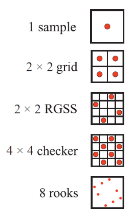

Antyaliasing
Antyaliasing
- Techniki służące zmniejszaniu liczby błędów, które powstają przy reprezentacji obrazu o wysokiej rozdzielczości w mniejszej rozdzielczości
- Im bliżej kąta 45 stopni tym bardziej rzuca się w oczy
- Główne błędy
- krawędzie
- cienie
- odbłyski
- Rodzaje technik
- supersampling
- odpowiednie próbkowanie
- metody morfologiczne
Supersampling
- Techniki bazujące na pobraniu większej ilości próbek dla komórki ekranu
- Wartość piksela wyznacza się jako sumę ważoną próbek
- \(p(x,y) = \sum_{i=1}^n w_i c(i, x,
y)\)
- \(n\) - liczba próbek dla piksela
- \(c(i,x,y)\) - kolor próbki
- \(w_i\) - waga dla próbki
FSAA/SSAA
- Full-Scene antialiasing / Supersampling Antialiasing
- Renderuje się np. 2 razy większy obraz żeby potem zredukować do
mniejszej rozdzielczości przez uśrednianie
- kosztowne
- większa liczba obliczeń per piksel
Wykorzystanie akumulacji
- W czasie
- Wykorzystanie bufora akumulacji
- Wielkość bufora taka sama jak rozdzielczość obrazu
- więcej bitów per kolor
- Kilkukrotny render sceny z małym przesunięciem
- np. próbkowanie 2x2 - render 4 razy z przesunięciem o \(0.5\) piksela w obu osiach
Multisampling antialiasing
- Obliczanie cieniowania powierzchni raz per piksel i udostępnienie rezultatu dla próbek
- W przypadku, gdy jeden trójkąt pokrywa każdą lokalizację - jedno obliczenie cieniowania
- EQAA
- modyfikacja w celu optymalizacji pamięci
- przechowywanie koloru i głębi w tabeli + indeksy dla próbek
Wzorce próbkowania

- Kluczowe do redukcji aliasingu
- Największa wrażliwość - aliasing na pionowych / poziomych / przekręconych o 45 stopni liniach
- Przykładowe wzorce
- Siatka
- Przekrzywione
- Szachownica
- RGSS - rotated grid supersampling
- N-wież - ułożenie wież na szachownicy tak żeby żadna się nie widziała nawzajem
Metody morfologiczne
- Dokonywane w post-processingu
- Wykorzystuje informacje z otoczenia krawędzi
- Są lepsze informacje niż kolor do tego celu
- głębia
- wektory normalne
- W ogólności
- znajdź krawędź (metody typu Sobel)
- dla najbardziej prawdopodobnej dokonaj mieszania kolorów sąsiadów
FXAA
- Fast Approximate Antialiasing
- Algorytm
- wyrenderowany obraz + opcjonalnie luminancja
- jeżeli nie ma danej luminancji, można ją oszacować - np. wziąć zielony kanał z obrazu
- wykryj piksele z wysokim kontrastem - filtr górnoprzepustowy
- wykorzystaj kontrast w celu określenia orientacji krawędzi
- mieszanie kolorów biorąc pod uwagę kierunek i długość
- analiza sąsiadów z siatki 3x3
- oblicz drugi współczynnik mieszania aby wziąć pod uwagę długość krawędzi i kierunek
- wymieszaj kolory wykorzystując współczynniki
Inne techniki
- DLSS
- technologia Nvidii
- upsampling obrazu z wykorzystaniem głębokiego uczenia
- mniejszy rendering i upsamplowanie jest szybsze niż większy rendering
- Multiframe
- przewidywanie kolejnych ramek
- nie trzeba wszystkich renderować(?)
Przezroczystość
- Duży problem w grafice
- Najbardziej skomplikowane uwzględniają
- refrakcję
- tłumienie
- zmiany odbić i transmisji ze względu na widok
Screen door transparency
- Prosta metoda
- Odrzucenie co któregoś piksela z pierwszego planu i zastąpienie pikselem z drugiego planu
- Schemat szachownicy
- Działa tylko dla pojedynczego obiektu
Przezroczystość stochastyczna
- Wykorzystanie subpikselowych masek
- Wykorzystanie próbkowania stochastycznego
- Stosowana w CADach
Mieszanie
- ang. blending
- Koncepcja - przy renderowaniu oprócz koloru i głębi można zdefiniować komponent alfa
- Alfa
- stopień nieprzezroczystości
- stopień pokrycia fragmentu dla danego piksela
- Mieszanie over
- \(c_o = \alpha_s c_s + (1-\alpha_s)c_d\)
- \(\alpha_s\) - alfa obiektu
- \(c_s\) - kolor przezroczystego obiektu
- \(c_d\) - kolor piksela przed mieszaniem
- suma ważona kanałem alfa z obiektu i z tła
- Można zmodyfikować do addytywnego efektu
- świecące obiekty
- półprzezroczyste obiekty
- Mieszanie under
- modyfikacja poprzedniego trybu
- mieszanie od przodu do tyłu daje zawsze ten sam rezultat
- \(c_o = \alpha_d c_d + (1-\alpha_d) \alpha_s c_s\)
- \(\alpha_o = \alpha_s(1-\alpha_d) + \alpha_d\)
- wykorzystywane do rysowania wszystkich przezroczystych obiektów do pojedynczego bufora
- potem połączenie wykorzystując mieszanie over